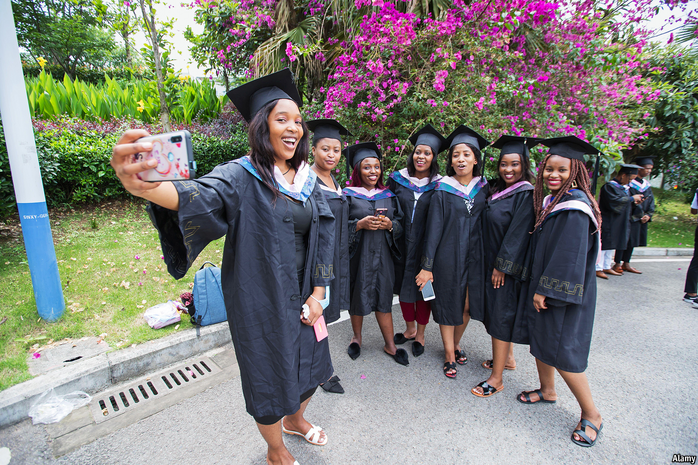

2021-02-14T16:34:16+00:00
非洲学生
无法入校
中国成为外国大学生主要留学目的地的进程被疫情扰乱

当席巴·波罗奇亚（Hiba Bourouqia）获得中国政府奖学金学习国际贸易时，她“充满了希望，充满了活力”。但是现在，“我只能坐着哭。”这个19岁的摩洛哥女孩说。中国严格的检疫措施迫使她只能在卡萨布兰卡附近的家里远程学习。波罗奇亚想过放弃，申请一所摩洛哥大学。但她说那里的学术水平比不上中国，所以她还在坚持。
环顾全球，许多国际学生的梦想都被疫情粉碎。新冠病毒也破坏了中国继续作为国际学生主要目的地的希望。2019年，中国接收了近50万名外国学生，在全球排名第三，略少于英国，尽管还只有美国的一半。然而，现在中国严格的边境管制让海外学生几乎不可能进入中国。许多人感到愤怒。
非洲一直是中国寻求提升自己全球“软实力”的一大目标。疫情爆发之前有八万多名非洲人在中国学习。中国已经超过美国（47,000人）和英国（29,000人）成为非洲留学生的主要目的地，且开始追赶传统的领头羊法国（112,000人）。中国政府向非洲提供了大量奖学金。一家教育慈善机构估计，撒哈拉以南非洲地区获得的奖学金中有43%由中国政府提供。
西方学生通常在中国最多学习一年，而许多非洲学生从入学到毕业都住在校内。尽管中国在奖学金上已经很慷慨，但仍有约85%的学生是自费的，因此他们自觉投入巨大。他们也担心就业前景。“你会雇用一个在网上学土木工程的人吗？”被困在祖国津巴布韦的大三学生达瓦恩（Davine）问道。
许多非洲学生加入了社交媒体上的一个国际运动“#带我们回中国”（#TakeUsBackToChina）。该运动指责中国无视学生们要求返校的请求，尽管他们已经准备好接受必要的核酸检测并配合隔离。他们已经写了一份请愿书，表示不能继续为糟糕的在线课程付费，这些课程常常要求他们半夜起床。
去年初中国发生的一系列种族主义事件加剧了非洲学生的不满情绪。在广州，在几名尼日利亚人检测出新冠阳性后，包括一些学生在内的几十个非洲人被逐出住处。
但是，尽管有眼下这些问题，中国的大学看来仍会吸引非洲学生。中国的顶尖大学有很多在全球的排名不断上升，在那里读一年的费用不超过4000美元，是欧洲或美国高校的十分之一。北京大学空气动力学博士生、埃及人穆斯塔法·埃尔-萨拉莫尼（Mostapha El-Salamony）表示，申请中国的大学也更容易录取，在正常时期也更容易获得签证。他说他和一流的科学家一起工作，使用一流的设备，大多数国际学生的课程用英语授课。“中国过去是，现在仍然是最好的选择。”波罗奇亚说。
2021-02-14T16:34:16+00:00
African students
School’s out
The pandemic disrupts China’s rise as a destination for foreign scholars
WHEN HIBA BOUROUQIA won a Chinese government scholarship to study international trade, she was “full of hope, full of life”. Now, however, “I just sit and cry,” says the 19-year-old Moroccan. China’s strict quarantine measures have forced her to study remotely from her home near Casablanca. Ms Bourouqia considered giving up and applying for a Moroccan university. But she says the academic standards are not up to China’s, so she is persevering.
Around the world the dreams of many international students have been shattered by the pandemic. The virus has also damaged China’s hopes to continue as a major destination for international students. In 2019 it was third globally, receiving almost 500,000 foreign students, just behind Britain, though still only half the number going to America. Now, however, China’s tough border controls have made it almost impossible for overseas students to enter the country. Many are furious.
Africa has been a big target of Chinese efforts to enhance its global “soft power”. More than 80,000 Africans were studying there before the pandemic struck. China has surpassed America (47,000) and Britain (29,000) as the destination of choice for African students and is now closing on the traditional frontrunner, France (112,000). The Chinese government has showered the continent with bursaries. One education charity estimates that 43% of all scholarships to sub-Saharan Africa are provided by the Chinese government.
Unlike Western students, who usually study in China for a year at most, many Africans live from enrolment to graduation on campus. And for all China’s largesse with scholarships, about 85% of them are self-funded, so they feel heavily invested. They also worry about job prospects. “Would you employ a person who did civil engineering online?” asks Davine, a third-year undergraduate who is stuck in his home country, Zimbabwe.
Many African students have joined an international social-media campaign, #TakeUsBackToChina. It accuses China of ignoring their pleas to be allowed back, even though they are prepared to take necessary tests for covid-19 and submit to quarantine. They have written a petition saying they cannot continue to pay fees for poor online lessons that often require them to be up in the middle of their night.
The grievances of African students have been compounded by a spate of racist incidents in China early last year. In the southern city of Guangzhou, dozens of Africans, including students, were evicted from their homes after several Nigerians tested positive for covid-19.
But in spite of the current problems China’s universities are likely to keep attracting Africans. A year at a leading Chinese college, many of which are rising up global league tables, costs no more than $4,000 in fees, one-tenth of the cost in Europe or America. Mostapha El-Salamony, an Egyptian doctoral student in aerodynamics at Peking University, says it is also easier to gain admission to Chinese universities and, in normal times, to secure a visa. He says he works with top-class scientists and equipment, and most classes for international students are taught in English. Says Ms Bourouqia, “China was and still is the best choice.”■
2021-02-14T16:34:16+00:00
非洲學生
無法入校
中國成為外國大學生主要留學目的地的進程被疫情擾亂
當席巴·波羅奇亞（Hiba Bourouqia）獲得中國政府獎學金學習國際貿易時，她“充滿了希望，充滿了活力”。但是現在，“我只能坐着哭。”這個19歲的摩洛哥女孩說。中國嚴格的檢疫措施迫使她只能在卡薩布蘭卡附近的家裡遠程學習。波羅奇亞想過放棄，申請一所摩洛哥大學。但她說那裡的學術水平比不上中國，所以她還在堅持。
環顧全球，許多國際學生的夢想都被疫情粉碎。新冠病毒也破壞了中國繼續作為國際學生主要目的地的希望。2019年，中國接收了近50萬名外國學生，在全球排名第三，略少於英國，儘管還只有美國的一半。然而，現在中國嚴格的邊境管制讓海外學生幾乎不可能進入中國。許多人感到憤怒。
非洲一直是中國尋求提升自己全球“軟實力”的一大目標。疫情爆發之前有八萬多名非洲人在中國學習。中國已經超過美國（47,000人）和英國（29,000人）成為非洲留學生的主要目的地，且開始追趕傳統的領頭羊法國（112,000人）。中國政府向非洲提供了大量獎學金。一家教育慈善機構估計，撒哈拉以南非洲地區獲得的獎學金中有43%由中國政府提供。
西方學生通常在中國最多學習一年，而許多非洲學生從入學到畢業都住在校內。儘管中國在獎學金上已經很慷慨，但仍有約85%的學生是自費的，因此他們自覺投入巨大。他們也擔心就業前景。“你會僱用一個在網上學土木工程的人嗎？”被困在祖國津巴布韋的大三學生達瓦恩（Davine）問道。
許多非洲學生加入了社交媒體上的一個國際運動“#帶我們回中國”（#TakeUsBackToChina）。該運動指責中國無視學生們要求返校的請求，儘管他們已經準備好接受必要的核酸檢測並配合隔離。他們已經寫了一份請願書，表示不能繼續為糟糕的在線課程付費，這些課程常常要求他們半夜起床。
去年初中國發生的一系列種族主義事件加劇了非洲學生的不滿情緒。在廣州，在幾名尼日利亞人檢測出新冠陽性後，包括一些學生在內的幾十個非洲人被逐出住處。
但是，儘管有眼下這些問題，中國的大學看來仍會吸引非洲學生。中國的頂尖大學有很多在全球的排名不斷上升，在那裡讀一年的費用不超過4000美元，是歐洲或美國高校的十分之一。北京大學空氣動力學博士生、埃及人穆斯塔法·埃爾-薩拉莫尼（Mostapha El-Salamony）表示，申請中國的大學也更容易錄取，在正常時期也更容易獲得簽證。他說他和一流的科學家一起工作，使用一流的設備，大多數國際學生的課程用英語授課。“中國過去是，現在仍然是最好的選擇。”波羅奇亞說。